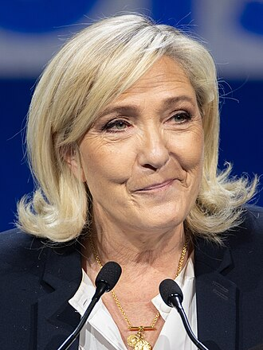
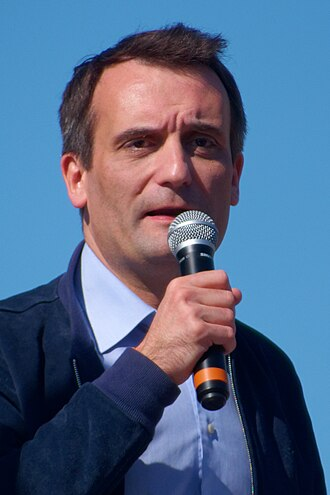
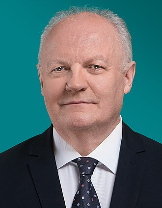

Présidentielle 2027 · Transparence électorale
Leurs votes,
pas leurs promesses.
Pour chaque candidat à la présidentielle, ce qu'il a réellement voté au Parlement, sa présence et son parcours, à partir des données publiques officielles, chaque fait relié à sa source.
Voir les candidats Comparer des candidats Lire la méthode
Comment lire ce site
Trois gestes suffisent. Le site ne vous dit jamais quoi penser : il vous donne les faits, vous vous faites votre opinion.
Choisissez un candidat
Parcourez les candidatures déclarées et les personnalités en lice pour une primaire. Une pastille indique d'emblée ce qui est disponible.
Lisez ses votes réels
Ses positions sur les votes clés, regroupées par thème, chacune accompagnée d'un résumé neutre de la loi et de son assiduité.
Comparez des candidats
Mettez plusieurs candidats côte à côte sur les mêmes votes clés et voyez, thème par thème, où ils se rejoignent et où ils s'opposent.
Les candidats
Déclarations publiques recensées et sourcées. La liste officielle ne sera établie par le Conseil constitutionnel qu'après validation des parrainages, en mars 2027.
Candidatures déclarées

Anasse Kazib
Antoine Mikolajczak
Bernard Cazeneuve
Clara Egger

Florian Philippot
